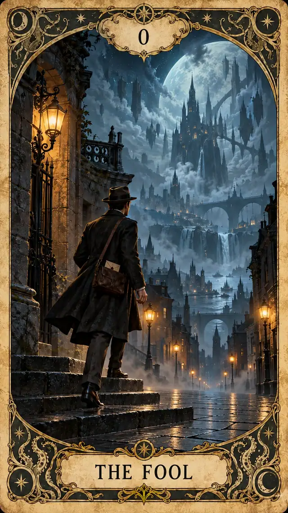

THE FORBIDDEN ARCANA / 1926
禁忌之书
克苏鲁塔罗
22张大阿卡纳 · 禁忌图鉴 · 命运仪式
这是可交互网页版。若你只能看到这个预览页面，表示当前应用的文件查看器没有运行网页脚本。
完整占卜需要支持 JavaScript 的浏览器（Safari、Chrome等），请使用已部署的网站地址打开，而不是聊天中的文件预览。

THE FORBIDDEN ARCANA / 1926
22张大阿卡纳 · 禁忌图鉴 · 命运仪式
这是可交互网页版。若你只能看到这个预览页面，表示当前应用的文件查看器没有运行网页脚本。
完整占卜需要支持 JavaScript 的浏览器（Safari、Chrome等），请使用已部署的网站地址打开，而不是聊天中的文件预览。
